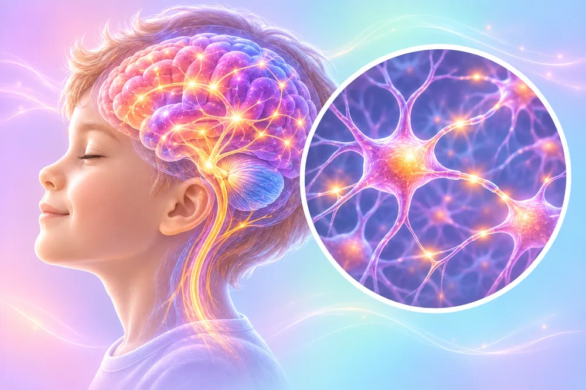

Told by a doctor: attention & development
5 conditions and symptoms
Open in the AI Body Master appBody map, 5-step body assessment and your soothing plan
5 conditions and symptoms
Open in the AI Body Master appBody map, 5-step body assessment and your soothing plan